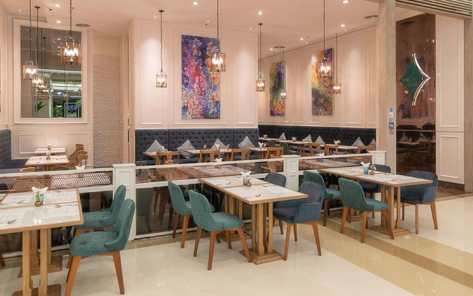

 บริษัท เดอะ ลักซ์ ฟู๊ด จำกัด นำโดย อัครพงศ์ ดาโลดม ประธานกรรมการ และ สวินณา ดาโลดม กรรมการผู้จัดการ
บริษัท เดอะลักซ์ ฟู๊ด จำกัด แนะนำโฉมใหม่ร้าน “มิดทาวน์ ไทย” (Midtown Thai)
ร้านอาหารไทยสไตล์โมเดิร์นที่นำเสนอรสชาติอาหารแบบไทยแท้ดั้งเดิม พิถีพิถันในการคัดสรรวัตถุดิบที่สดใหม่
บรรจงรังสรรค์รสชาติอาหารที่ทั้งกลมกล่อมและละเมียดละไมจากสูตรที่ส่งต่อจากรุ่นสู่รุ่น ที่มาพร้อมคอนซ็ปต์
Modern Thai Cuisine with Authentic Thai Tastes ณ ร้านมิดทาวน์ ไทย ชั้น 4 โซน Food Passage
ศูนย์การค้าสยามพารากอน
สวินณา ดาโลดม สวินณา ดาโลดม กรรมการผู้จัดการ บริษัท เดอะ ลักซ์ ฟู๊ด จำกัด ผู้บริหารร้านมิดทาวน์ ไทย กล่าวว่า
เชื่อว่าหลายๆ คนที่ได้มาเดินในศูนย์การค้าสยามพารากอน รู้จักร้านอาหารของเรา เพราะร้านนี้เปิดให้บริการได้ 7
ปีแล้ว เดิมใช้ชื่อว่า มิดทาวน์ ไทย แอนด์ อินเตอร์เนชั่นแนล บิสโทร (Midtown Thai & International Bistro)
นำเสนออาหารไทยฟิวชั่นและไวน์คุณภาพสูง
ในโอกาสการก้าวสู่ปีที่ 8 เราจึงได้ปรับรูปโฉมและคอนเซ็ปต์ใหม่เป็น Modern Thai Cuisine with Authentic Thai
Tastes พร้อมทั้งสร้างภาพลักษณ์ที่ชัดเจนขึ้นให้กับแบรนด์ โดยตั้งใจทำในสิ่งที่ถนัดมากที่สุดคือ
“อาหารไทยโบราณรสชาติดั้งเดิม” เนื่องด้วยบุคลากรของเรามีความเชี่ยวชาญด้านครัวไทย
จึงได้ตัดรายการอาหารนานาชาติออกจากเมนูทั้งหมด ถึงแม้ว่าที่ผ่านมาจะได้รับเสียงตอบรับที่ดีจากลูกค้าก็ตาม
และจากการศึกษาพฤติกรรมลูกค้าพบว่า ส่วนใหญ่ชื่นชอบและเลือกสั่งเมนูอาหารไทยมากกว่า นอกจากนี้
เราอยากดึงกลุ่มเป้าหมายใหม่คือ “ชาวต่างชาติ” ให้เข้ามาลิ้มรสอาหารไทยที่เป็นรสชาติดั้งเดิม
เนื้อวากิว ด้วยความที่ร้านตั้งอยู่ใจกลางของกรุงเทพฯ ในศูนย์การค้าสยามพารากอน จึงเป็นที่มาของร้าน “มิดทาวน์
ไทย” โดยทางร้านเสิร์ฟอาหารไทย 100 เปอร์เซ็นต์ เน้นอาหารภาคกลางเป็นหลักและเพิ่มความหลากหลายด้วยอาหารอีสาน
ที่ทุกจานปรุงรสแบบจัดจ้านเข้าถึงเอกลักษณ์ความเป็นอาหารไทยดั้งเดิมอย่างแท้จริง มีเมนูให้เลือกทั้งหมด 120
รายการ ประกอบด้วยเมนูอาหารไทยโบราณที่เป็นเมนูใหม่ของทางร้าน และเมนูดั้งเดิม
โดยจานซิกเนเจอร์ที่ขายดีตลอดกาลคือ ซี่โครงย่างมหัศจรรย์ (ราคา 300 บาท)
ที่นำซี่โครงหมูอ่อนชั้นดีหมักด้วยเครื่องปรุงสูตรเฉพาะนานกว่า 24
ชั่วโมงจนซึมเข้าเนื้อและนำไปย่างจนได้หมูที่นุ่มร่อนออกจากซี่โครงได้อย่างง่ายดาย
ทานคู่กับน้ำจิ้มแจ่วรสเด็ดกว่าจะได้มาซึ่งเมนูนี้ได้ผ่านขั้นตอนการทดลองมากกว่า 80 ครั้งจนได้สูตรที่ลงตัว
ยำวุ้นเส้นโบราณ อีกหนึ่งเมนูที่เป็นขวัญใจของทุกโต๊ะคือ ยำวุ้นเส้นโบราณ (ราคา 150 บาท)
เมนูประจำบ้านสูตรของคุณแม่ จานง่ายๆ แต่กรรมวิธีการทำมีหลายขั้นตอน มีจุดเด่นคือการยำวุ้นเส้นแบบแห้งๆ จัดจ้าน
ครบรส ใส่สารพัดเครื่อง ไม่ว่าจะเป็น หมูสับคั่วกระเทียม กุ้งแห้งทอดกรอบ และถั่วลิสงคั่วหอมๆ
ทานแล้วจะนึกถึงกับข้าวที่คุณแม่ทำให้ทานตอนเด็กๆ ส่วนของหวานที่ทุกโต๊ะต้องสั่ง ได้แก่ เฉาก๊วยนมสด
ใช้เฉาก๊วยโฮมเมดที่ร้านทำเอง, ทับทิมกรอบ และใหม่ล่าสุดคือ บัวลอยหม้อไฟ ที่มีส่วนผสมของฟักทอง เผือก ใบเตย
ส่วนเมนูเครื่องดื่มก็จะเน้นน้ำสมุนไพรไทย และน้ำผลไม้
เติมเต็มมื้ออาหารและเพิ่มความสดชื่นคลายร้อนได้เป็นอย่างดี
หัวใจของร้านมิดทาวน์ ไทยคือ การใช้วัตถุดิบที่สดใหม่ สะอาด คุณภาพเยี่ยม มีแหล่งที่มาที่ชัดเจน ไม่ว่าจะเป็น
ผักสด เครื่องปรุงรส เนื้อสัตว์ สมุนไพร อาหารทะเล ล้วนแล้วแต่ผ่านการคัดสรรและส่งตรงมาจากแหล่งผลิตโดยตรง
หลีกเลี่ยงการซื้อผ่านพ่อค้าคนกลาง เพราะเราต้องการควบคุมคุณภาพและจัดการต้นทุนให้ได้มาตรฐานตามที่ร้านกำหนด
นอกจากวัตถุดิบที่ดีแล้ว รสชาติเป็นสิ่งที่จะทำให้ลูกค้าติดใจอยากเข้ามาใช้บริการซ้ำ
โดยรสชาติอาหารได้มาจากสูตรของคุณแม่ของสามี (อัครพงศ์ ดาโลดม) ท่านเป็นผู้กำหนดรสชาติอันเป็นเอกลักษณ์ของหลายๆ
เมนูในร้าน เพราะที่ร้านเรามีความเชี่ยวชาญด้านอาหารไทย เนื่องจากครอบครัวเราทำธุรกิจร้านอาหารไทย
และประสบการณ์ในการบริหารร้านอาหารไทยชื่อดังมามากมาย
midtown thai ภายในร้านรองรับได้ 60 – 70 ที่นั่ง บนพื้นที่ 136 ตร.ม. สำหรับโฉมใหม่เราตกแต่งในสไตล์ Neo
Classic เป็นการเชื่อมต่อศิลปะสมัยใหม่ กับความสวยงามในอดีต ตั้งใจให้เป็นร้านที่มีบรรยากาศสบายๆ
เหมือนมานั่งทานข้าวที่บ้านเพื่อน เพราะกลุ่มเป้าหมายคือทุกเพศทุกวัย ไม่ว่าจะเป็น ครอบครัว กลุ่มเพื่อน คนทำงาน
จึงสร้างบรรยากาศให้ดูอบอุ่น มีความเป็นมิตรด้วยการใช้โทนสีขาว เขียว ทอง และมีกลิ่นอายความเป็นไทยที่ชัดเจนขึ้น
โดยเปลี่ยนโลโก้ร้านใหม่เป็น รูปสี่เหลี่ยมที่มีลายเส้นอ่อนช้อย
มุมด้านบนสื่อถึงหน้าจั่วเรือนไทย และมีรูปเครื่องเบญจรงค์ประดับอยู่บนชื่อร้าน Midtown Thai
เป็นการใช้สัญลักษณ์แบบไทยเพื่อสื่อถึงตัวตนของร้านที่เน้นอาหารไทยโบราณ
ราคาอาหารเริ่มต้นที่ 150 – 800 บาท หรือประมาณ 300 บาทต่อคน และพิเศษสำหรับวันจันทร์-ศุกร์
เราได้เตรียมเซ็ทเมนู Lunch Special เอาใจหนุ่มสาวออฟฟิศด้วยราคาเบาๆ เริ่มต้นที่ 150
บาทให้ได้มาอิ่มอร่อยกันในช่วงมื้อเที่ยงวันทำงาน
ด้วยการตั้งราคาอาหารที่ไม่สูงจนเกินไปและรสชาติที่อร่อยไว้ใจจึงทำให้ถูกใจหนุ่มสาวออฟฟิศละแวกนั้น…
ขอเชิญลิ้มรสชาติอาหารไทยรสชาติดั้งเดิมของร้านมิดทาวน์ ไทย ได้แล้ววันนี้ ณ ชั้น 4 โซน Food Passage
ศูนย์การค้าสยามพารากอน
สอบถามและจองที่นั่งล่วงหน้าได้ที่ โทร 02-129-4516 หรือผ่านทาง www.facebook.com/Midtownthai